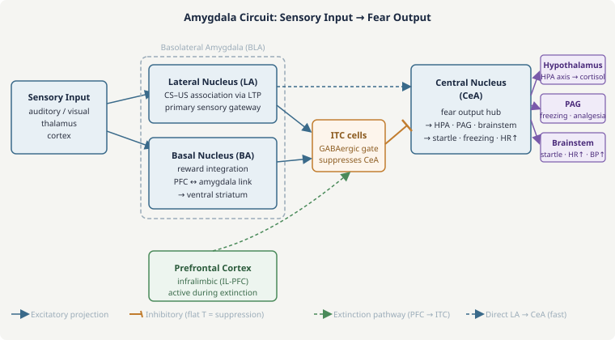

Emotion & the Limbic System
Emotion is not a soft add-on to cognition — it is deeply integrated with every aspect of neural processing. The same brain regions that evaluate threat and trigger fear also modulate attention, bias memory consolidation, influence decision-making, and regulate the body. The limbic system — a loosely defined set of interconnected structures including the amygdala, hippocampus, hypothalamus, cingulate cortex, and related areas — is the neural substrate of emotional experience and its connections to bodily states and motivated behavior. Understanding it means understanding not just fear and pleasure, but the biological basis of anxiety disorders, PTSD, depression, and the pervasive influence of emotional state on everything the brain does.

The core amygdala circuit. The ITC cells act as a GABAergic gate: when active (driven by PFC during extinction), they suppress CeA and block fear expression without erasing the underlying LA memory.
The amygdala is not a single structure but a collection of ~13 nuclei with distinct connectivity. The two most important for emotion are:
Basolateral amygdala (BLA) — comprising the lateral nucleus (LA), basal nucleus (BA), and accessory basal nucleus. The LA is the primary sensory input region: it receives convergent projections from auditory and visual thalamus and cortex, hippocampus, and prefrontal cortex. LA neurons form associations between neutral stimuli (CS) and emotionally significant events (US) — this is where fear conditioning occurs at the cellular level. The LA projects to the BA, which in turn connects to the central nucleus and to prefrontal cortex, hippocampus, and ventral striatum.
Central nucleus (CeA) — the main output nucleus. The medial CeA is the "fear output" center: its projections drive the physiological and behavioral manifestations of fear: to the hypothalamus (autonomic activation, HPA axis), periaqueductal gray (PAG, defensive behavior — freezing, escape, analgesia), paraventricular nucleus (CRF release), lateral hypothalamus (sympathetic activation), and brainstem nuclei controlling startle (nucleus reticularis pontis caudalis). When the BLA activates the CeA, you get the entire fear response — freezing, heart rate acceleration, blood pressure increase, stress hormone release, heightened pain threshold — even without cortical involvement.
The BLA and CeA are connected by the "intercalated cell masses" (ITC) — small inhibitory neurons between BLA and CeA that provide a gate: when ITC cells are active, they suppress CeA and prevent fear expression. PFC stimulation activates ITCs. This is the cellular mechanism of prefrontal extinction: PFC suppresses fear by activating ITC-mediated inhibition of CeA, not by erasing the CS-US association in LA.
Fear conditioning is the laboratory model for studying emotional learning. A neutral CS (e.g., a tone) is paired with an aversive US (a mild foot shock). After a few pairings, the CS alone elicits the full fear response — freezing, autonomic activation, potentiated startle. This learning is rapid (sometimes single-trial with intense aversive experiences), robust, and long-lasting.
At the cellular level, the CS-US pairing drives LTP in LA neurons: thalamic (or cortical) auditory input and shock input converge on the same LA neurons, and the Hebbian coincidence detection of NMDA receptors potentiates the CS pathway — making the tone pathway stronger so that future tone presentations, alone, activate LA and trigger CeA. The molecular requirements are identical to hippocampal LTP: NMDA receptor activation during coincident pre-and-post firing, AMPA receptor insertion, CaMKII activation, and CREB-mediated transcription for long-term storage.
The high road and low road (LeDoux)
Joseph LeDoux's important insight is that sensory information reaches the amygdala via two parallel routes that differ in speed and precision:
The low road: thalamus → amygdala directly. Thalamic relay nuclei send a coarse, fast (~12 ms in rodents) projection directly to the lateral amygdala. This pathway carries a crude, "quick and dirty" version of the sensory information — enough to recognize that something might be dangerous, not enough to identify it precisely. It enables the amygdala to begin preparing a fear response before conscious cortical processing is complete.
The high road: thalamus → cortex → amygdala. The full sensory analysis in cortex (~25 ms more) provides a detailed, accurate representation of the stimulus. When this arrives at the amygdala, it either confirms the danger (in which case the fear response continues) or cancels it ("just the wind, not a predator").
The low road is the basis of pre-cognitive emotional reactions — the startle and heart-rate acceleration before you've consciously identified what startled you. It explains why people with damage to visual cortex can still fear-condition to visual stimuli (via thalamo-amygdala pathway), and why phobic responses (spider phobia) can occur even when the stimulus is presented subliminally below conscious awareness.
Extinction
When the CS is repeatedly presented without the US, fear responses diminish — extinction. Extinction is not erasure of the original CS-US memory but a new inhibitory learning: the infralimbic prefrontal cortex (IL-PFC) becomes active and drives ITC-mediated inhibition of CeA. The original fear memory is preserved — it can return spontaneously (spontaneous recovery), be reinstated by an unconditioned stressor (reinstatement), and re-emerge in a context different from where extinction occurred (renewal). These phenomena explain why treating PTSD or phobias through extinction (exposure therapy) can produce lasting improvement without absolute guarantees of non-relapse, especially when the person returns to the original trauma context.
Stress activates the hypothalamic-pituitary-adrenal (HPA) axis, the brain's primary hormonal stress response system:
- The amygdala (CeA) activates CRF (corticotropin-releasing factor) neurons in the paraventricular nucleus of the hypothalamus (PVN).
- CRF is released into the portal blood supply of the anterior pituitary, stimulating release of ACTH (adrenocorticotropic hormone) into the bloodstream.
- ACTH reaches the adrenal cortex and stimulates synthesis and release of glucocorticoids (cortisol in humans, corticosterone in rodents).
- Cortisol acts on virtually every tissue in the body — mobilizing glucose, suppressing immune function, enhancing cardiovascular tone — preparing the body for sustained threat response.
- Cortisol feeds back to the hippocampus and PVN via glucocorticoid receptors, suppressing CRF and ACTH release — a negative feedback loop that terminates the stress response.
Chronic stress dysregulates this system. Chronically elevated cortisol causes hippocampal damage — dendritic atrophy in CA3 pyramidal neurons, suppression of hippocampal neurogenesis, and eventually cell death with severe or prolonged stress. The hippocampus normally provides inhibitory control over the HPA axis (hippocampal glucocorticoid receptors suppress PVN activity); its damage under chronic stress removes this brake, creating a positive feedback loop of elevated cortisol and progressive hippocampal damage. This is the biological basis of stress-related cognitive impairment and the well-documented hippocampal volume reduction in PTSD and depression.
The amygdala responds oppositely: chronic stress causes dendritic growth and increased synaptic density in BLA neurons, making them more reactive. This explains the hypervigilance and heightened emotional reactivity in PTSD and chronic anxiety — a chronically sensitized amygdala combined with a weakened hippocampal/prefrontal brake.
Emotionally arousing events are remembered better than neutral events — a well-replicated finding in humans and animals. The mechanism involves noradrenergic modulation of memory consolidation in the amygdala and hippocampus.
During an emotionally arousing experience, the LC releases noradrenaline (NE) into the BLA. NE, acting on β-adrenergic receptors, activates PKA, which phosphorylates CREB and initiates gene expression changes that strengthen and consolidate the memory trace — both in the BLA (for the emotional significance) and in the hippocampus (for the episodic context). Blocking β-adrenergic receptors with propranolol immediately after an emotional event attenuates the enhanced memory — without blocking memory for the event itself, only its emotional enhancement. This has led to trials of propranolol given immediately post-trauma as a potential PTSD prophylactic, with mixed results.
The enhanced consolidation of emotional memories is mediated by the amygdala projecting to the hippocampus and neocortex and essentially saying "this was important — store it well." This is adaptive: remembering threatening or rewarding events accurately is survival-relevant. It becomes maladaptive in PTSD, where traumatic memories are consolidated with extraordinary strength, become intrusive, and resist extinction.
Depression is not simply "low serotonin" — it is a complex neurobiological state involving dysregulation of multiple systems:
- HPA axis hyperactivity: Many depressed patients show elevated cortisol and a blunted dexamethasone suppression test (failure of the normal negative feedback — the hallmark of HPA dysregulation).
- Prefrontal hypoactivity: Reduced activity in DLPFC (impaired executive function, ruminative thinking) and subgenual ACC (sgACC, area 25), which is paradoxically overactive in depression and modulates mood via its projections to hypothalamus, brainstem, and amygdala. Deep brain stimulation (DBS) of area 25 produces rapid antidepressant effects in treatment-resistant cases — demonstrating the causal role of this region.
- Amygdala hyperactivity: Elevated amygdala responses to negative stimuli, including subliminal emotional faces, are a consistent finding in depression and anxiety, contributing to negative bias in attention and memory.
- Hippocampal volume reduction: MRI studies consistently show reduced hippocampal volume in depression, proportional to duration and severity of illness. Whether this is a cause or consequence of depression (or both) is unresolved, but hippocampal neurogenesis is required for some behavioral effects of antidepressants in rodents.
Anxiety disorders share an over-reactive amygdala phenotype — excessively strong fear responses to ambiguous or safe stimuli, deficient extinction, and excessive generalization of fear from specific threats to a broad range of cues. Panic disorder involves particularly strong responses from the bed nucleus of the stria terminalis (BNST), a subdivision of the extended amygdala that mediates sustained, uncertain threat processing (as opposed to the CeA's role in acute, specific threat).
S.M. cannot be fear-conditioned — she does not develop conditioned fear responses to cues paired with aversive outcomes, consistent with the amygdala's role in CS-US association learning. She does not show normal fear in situations that reliably trigger fear in controls (edge of a cliff, haunted house, handling snakes or spiders) — she approaches these with inappropriate curiosity rather than avoidance. Her recognition of fearful facial expressions is impaired (LA neurons normally respond strongly to fearful faces), though she can recognize other emotions from facial expressions. She shows reduced autonomic startle responses.
What is preserved: S.M. can still experience pain (the primary aversive sensation is intact — her problem is not perceiving threat but not learning to fear cues associated with threat). She has normal social cognition for emotions other than fear and has normal declarative memory for facts. Notably, she can experience panic when carbon dioxide is inhaled (a direct interoceptive signal processed by brainstem rather than amygdala), demonstrating that the amygdala is not the only route to fear experience — just the dominant one for conditioned and social fear signals. She demonstrates what we would expect from LeDoux's model: blocking the thalamo-amygdala and cortex-amygdala routes (which are both absent with bilateral amygdala destruction) eliminates conditioned and cognitively mediated fear, while brainstem-mediated fear to direct homeostatic threats remains.
Renewal: The rat freezes again to the tone in context A — the extinguished fear "renews" in the original conditioning context. This demonstrates that extinction does not erase the original CS-US memory (which remains encoded in LA neurons). Instead, extinction creates a new inhibitory memory: "CS is safe in context B." The hippocampus encodes this contextual specificity, associating the extinction memory with context B. When the animal returns to context A, the hippocampus signals context A, retrieving the original fear memory rather than the extinction memory.
Implications for PTSD treatment: Exposure therapy (the clinical equivalent of extinction) works by having the patient re-experience trauma-related cues without the US. The renewal phenomenon predicts that recovery may be context-specific: a veteran conditioned to fear combat sounds who undergoes exposure therapy in a clinical office may show reduced fear during therapy and in the clinic but relapse when returning to environments resembling combat (the original conditioning context). This is a well-documented problem in PTSD treatment. One implication is that exposure therapy should be conducted in multiple contexts (to train generalized extinction) and, where possible, in environments resembling those where symptoms occur. It also explains why pharmacological adjuncts that enhance extinction consolidation (D-cycloserine, which is an NMDA partial agonist and was tested to boost extinction in PTSD) could theoretically help — by strengthening the extinction memory to compete more effectively with the fear memory across contexts.
-
The amygdala responds to threats before we consciously recognize them. Does this mean emotional responses are fundamentally irrational — should we trust our gut feelings?
The low road's speed is useful precisely because it enables a fast preparatory response before slow conscious analysis is complete — this is adaptive for rapidly evolving threats. But fast is not the same as accurate. The thalamo-amygdala pathway carries a rough, imprecise sensory signal. It evolved for ancestral environments where most dark, fast-moving shapes at dusk were actually predators. In modern environments, this system is frequently triggered by stimuli that share superficial features with historical threats but are not actually dangerous — a social slight activates the same system as physical threat, a spider on a wall triggers the same cascade as a predator. The gut feeling is real in the sense that the amygdala is genuinely processing something about the stimulus that has been associated with danger in the past. But that association may be biased, outdated, or simply wrong in the current context. The PFC/high road provides the correction — but it takes time, effort, and works best when not overwhelmed by high cortisol (stress) or sleep deprivation, both of which impair PFC function while potentiating amygdala reactivity. The upshot: gut feelings are data (they tell you what your amygdala has learned to fear), but they are not authoritative judgments (they can be wrong, biased by past experience, and overridden by contextual analysis).
-
If chronic stress shrinks the hippocampus, is the volume loss permanent?
Substantially reversible with treatment, which was surprising when first documented. Hippocampal volume reductions in depression recover partially following successful antidepressant treatment (documented in humans with MRI). In animal models, chronic stress-induced dendritic atrophy in CA3 neurons reverses within weeks of stress cessation, and suppressed neurogenesis resumes. Effective antidepressant treatment (SSRIs, exercise, ketamine) promotes hippocampal BDNF expression, enhances neurogenesis, and partially restores hippocampal volume. Stress-related volume loss is thus better thought of as a dynamic remodeling than permanent damage — the hippocampus is one of the few brain structures that can add new neurons in adulthood, and this capacity appears to be specifically regulated by stress and antidepressant treatment. However, prolonged severe stress (as in untreated long-duration depression or severe PTSD) may produce some degree of irreversible cell loss at the extreme, which is why early intervention matters.
- Treating the limbic system as a well-defined anatomical unit. Broca's original concept of a "limbic lobe" and MacLean's "triune brain" (reptilian/limbic/neocortex) are outdated. The "limbic system" is not a clean anatomical or functional category — the amygdala, hippocampus, hypothalamus, and cingulate cortex are distinct structures with different evolutionary origins, different connectivity, and different functions that happen to be interconnected. Modern neuroscience treats them individually rather than as a unified emotional module.
- Equating extinction with forgetting. Extinction is new inhibitory learning, not erasure. The original fear memory persists after extinction, as demonstrated by spontaneous recovery, reinstatement, and renewal. This distinction has direct clinical implications: treating phobias or PTSD through extinction therapy does not delete the trauma memory, which is why relapse prevention strategies and contextual generalization of extinction are important components of evidence-based exposure treatments.
- Assuming fear is the amygdala's only function. The amygdala responds to positive as well as negative arousing stimuli — it encodes emotional salience generally, not just threat. BLA neurons respond to reward-predicting cues and to social stimuli. The amygdala's role in emotional memory enhancement applies equally to positive emotional events (winning, falling in love) as to negative ones. Fear conditioning is the most studied paradigm, not the amygdala's only role.
- Neuroscience — Synaptic Plasticity (Lesson 7): Fear conditioning is LTP in the lateral amygdala — the same NMDA receptor coincidence detection, AMPA receptor trafficking, and CREB-dependent consolidation that were described for hippocampal LTP. The amygdala is a site of emotional learning via the same molecular machinery as cognitive learning, just with different connectivity and faster triggering by aversive events.
- Neuroscience — Reward & Neuromodulation (Lesson 13): The amygdala is a major target of dopaminergic (VTA), noradrenergic (LC), and serotonergic (raphe) projections. Stress-induced NE release in BLA enhances fear memory consolidation. Dopaminergic signals in the amygdala encode reward-related emotional salience. The emotional and reward systems are intimately intertwined.
- Neuroscience — Memory Systems (Lesson 8): The amygdala and hippocampus interact for emotional episodic memory: the hippocampus encodes the contextual narrative ("where I was, what happened"), the amygdala encodes emotional significance ("this was threatening"), and amygdala activation during encoding enhances hippocampal consolidation of the episode. Patient H.M. could still fear-condition (amygdala intact) but had no declarative memory of the conditioning session (hippocampus absent).